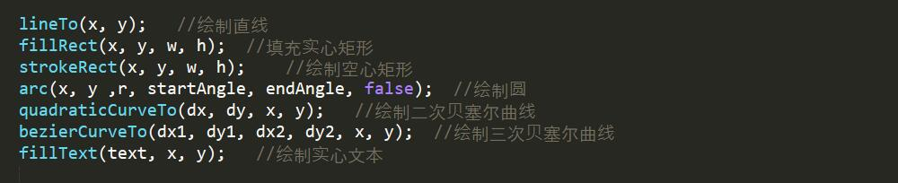

HTML5之canvas的运用
canvas画布，虽然平时基本用不到，不过居然是html5带来的新API，那就先熟悉一下，下面是练习的完成图↓↓↓
点我预览主要用到的是这几个绘图函数：
下面来一一讲解：
- lineTo(x, y);
这个就是简单的画直线，(x, y)就是结束点坐标
- fillRect(x, y, w, h);和strokeRect(x, y, w, h);
画矩形，其中(x, y)是左上角坐标，(w ,h)是矩形的长宽
- arc(x, y ,r, startAngle, endAngle, false);
画圆
(x,y) ——圆心坐标位置
r ——圆半径
startAngle ——开始角度,以弧度表示，弧度公式:角度*PI/180
endAngle ——结束角度,以弧度表示 弧度公式:角度*PI/180
true/false ——逆时针/顺时针绘图 - quadraticCurveTo(dx, dy, x, y);
二次贝塞尔曲线，类似于ps里的钢笔工具
(dx, dy) ——控制点坐标
(x, y) ——结束点坐标

对应代码为：moveTo(20,20); quadraticCurveTo(20,100,200,20); - bezierCurveTo(dx1, dy1, dx2, dy2, x, y);
三次贝塞尔曲线，比二次贝塞尔曲线多一个控制点
(dx1, dy1) ——控制点1
(dx2, dy2) ——控制点2
(x, y) ——结束点

对应代码为：moveTo(20,20); bezierCurveTo(20,100,200,100,200,20); - fillText(text, x, y);
绘制文本，text为文本内容，(x, y)为文本开始坐标